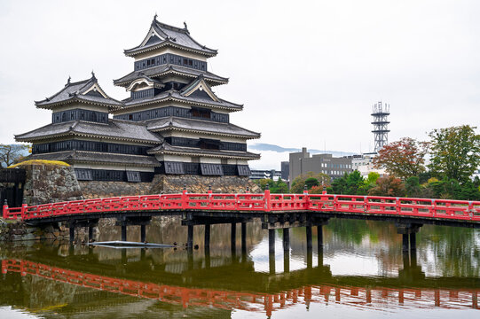
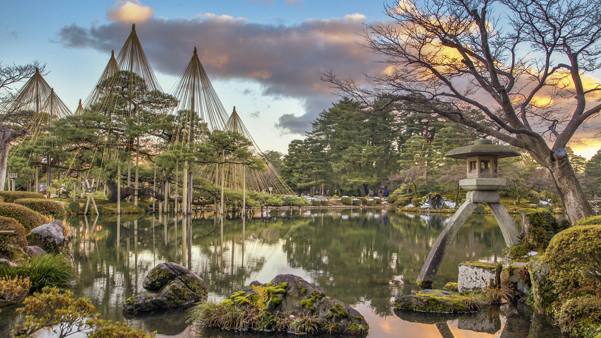
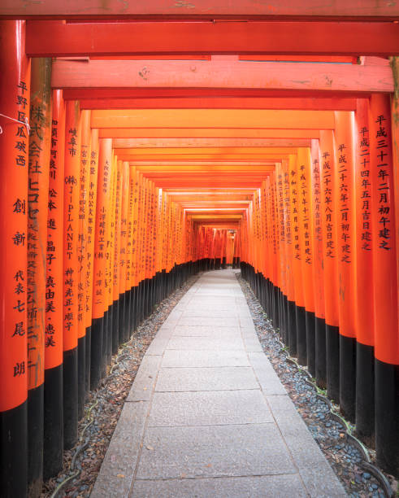
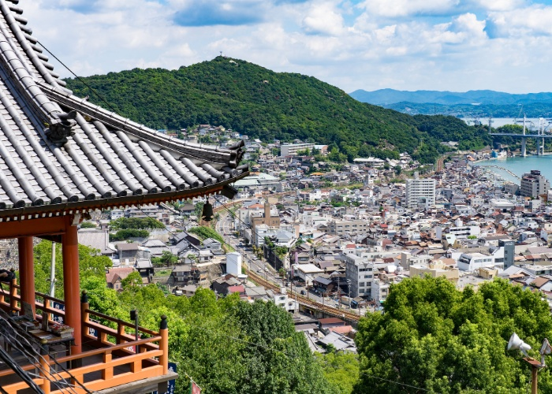
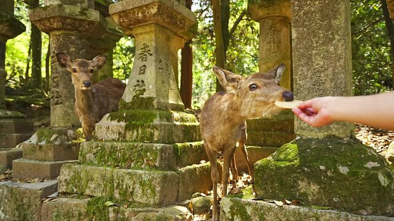

うらやまし 思ひ切る時 猫の恋
It’s enviable.
The gracefulness of
The cat’s love.
- Random Japanese person





Old Meets New // Day 1-3
Toyko
Experience the old Tokyo in Asakusa, one of the few areas of Tokyo that still looks much like it has for decades. The exception is Tokyo Sky Tree, Tokyo’s tallest building, which is well worth a visit too.
If you are to visit only one museum in Japan, it should be the Tokyo National Museum. It is located in Ueno, an area with many museums, art galleries, and a lovely park – Ueno Park, which also houses a zoo.
Get on top of Tokyo for a spectacular 360-degree open-air view from the rooftop of the Shibuya Scramble Square skyscraper (230 meters high).
Wander through the huge, lush Yoyogi Park in Shibuya until you reach Tokyo`s biggest shrine – Meiji-jingu Shrine, dedicated to Emperor Meiji and his Empress Shoken.
One day is reserved for freaking Disney out of all places
The most famous and popular attraction in the Fuji Five Lakes area is the red Chureito Pagoda with Mount Fuji in the background.
Go for a stroll along the north shore of Lake Kawaguchi through the beautiful Oishi Park and Nagasaki Park.
A very atmospheric shrine tucked away in the forest among tall cedar trees. The temple buildings are old wooden structures, and to get to the temple, you walk up a path lined with large moss-covered stone lanterns.
Matsumoto Castle is Japan`s oldest wooden castle, constructed in 1595, and one of four castles designated “National Treasures” of Japan.
The downtown of Matsumoto has a walking street, Nawate-dori, along the river with cozy shops and cafes, and there is a market in the evenings during summer. Make sure to try the taiyaki, crispy cakes in the shape of a fish filled with chocolate and vanilla, a specialty of Matsumoto.
Kenrokuen Japanese Garden Ranked as one of the top three gardens in Japan, it is beautiful all year round.
Samurai District A lovely neighbor of Kanazawa, where the Samurai used to live. Now the beautiful, traditional Japanese wood houses are turned into museums where you can walk around and see how the Samurai lived.
Geisha districts Head to the Geisha district of Kanazawa for some of Japan’s best-preserved Geisha tea houses. Here you can see real Geisha performances and participate in a tea ceremony.
Kyoto Bamboo Forest
Go for a stroll through the magical Bamboo Forest, and hear the wind making the bamboo leaves shake.
Fushimi-Inari Shrine
Walk under thousands of bright red torii gates at Fushimi-Inari Shrine, leading up to the mountain Inari. Each one of the over 4000 red Torii gates that line the way has been donated by a Japanese business to ensure their luck.
Manga Museum Learn all about this fascinating Japanese cartoon culture at the Kyoto Manga Museum.
Shukkei-en Japanese Garden
Hiroshima has a fantastic garden, the Japanese garden Shukkei-en, constructed in 1620 and modeled after a garden in China. Hiroshima Castle
Hiroshima Castle is also known as “Carp Castle”. The castle was initially constructed in 1589 by the daimyo/
feudal lord of Hiroshima, but was wiped out by the atomic bomb in 1945. So today’s Hiroshima Castle is a replica constructed in 1958.
Nara was Japan’s first permanent capital and is home to Japan’s greatest Buddha image, a 15 m-tall bronze Buddha statue housed inside the majestic Todai-Ji hall. Visit some of the oldest and biggest temples in Japan,
and feed and cuddle the deer that walk freely around the city and temples.